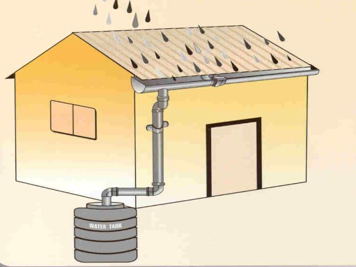

Basics of Rainwater Harvesting
Need for rainwater harvesting
Water harvesting is an activity of collection of rainwater and storing in containers for direct use or can be recharged in to the ground.
- As water is becoming scarce, it is the need of the day to attain self-sufficiency to fulfill the water needs
- As urban water supply system is under tremendous pressure for supplying water to ever increasing population
- Groundwater is getting depleted and polluted
- Soil erosion resulting from the unchecked runoff
- Health hazards due to consumption of polluted water
Rainwater Harvesting potential
Rainwater harvesting potential in urban areas is huge. Considering the availability of rainwater in a residential site of 40 x 60 feet (an area of 2400sq.ft./223 sq.mts.), around 2,23,000 lts of rainwater can be harvested in a location where the rainfall is around 1000 mm or 39.4 inches (Bangalore receives around 1000 mm of rainfall annually). The amount of rainwater that can be harvested from the available rainwater in the plot depends on potential rainfall, catchment area available, collection methods and its efficiency etc.
Rainwater Harvesting for Domestic Applications
Water requirement of a house can be broadly classified into
- Drinking
- Cooking
- Bathing
- Washing
- Vehicles
- Utensils
- Clothes
- Floor cleaning
- Gardening
- Flushing in toilets
For washing, gardening and flushing toilets, relatively less clean water can be used (secondary use). Rainwater Harvesting (RWH) can meet all these above needs with suitable RWH techniques. Water requirement in a house is throughout the year. However, rainwater availability without having facilities to store is limited to number of rainy days and the quantity of rainwater available during the rainy days. Several interventions can be made to enhance the number of days of use of rainwater from number of rainy days to 365 days a year. Parameters, which support rainwater harvesting, are availability of space, willingness to invest, technical suitability of soil structure and geological parameters.
Who can harvest rainwater and where?
- People planning construction of house, modification of house, existing house, etc.
- From rooftops of Govt. buildings, Institutions, Hospitals, Hotels, shopping malls etc.
- From rooftops and open areas
- Farmlands, Public Parks, Playground, etc.
- Paved and unpaved areas of a layout/city/town/village

Benefits
- Environment friendly and easy approach for water requirements
- RWH is an ideal solution for water requirements in areas having inadequate water resources
- Increases ground water level
- Improves ground water quality
- Mitigates the effects of drought
- Reduces the runoff, which other wise flood storm water drains
- Reduces flooding of roads and low-lying areas
- Reduces soil erosion
- Cost effective and easy to maintain
- Reduces water and electricity bills
Merits & Demerits
Merits
- Traditional Water Harvesting in Karnataka underlines the importance of step wells, lakes, tanks, channels etc., as water storage bodies, the basic purpose of which was to establish a chain of water storage structures. However, a vanishing "Lake Culture" due to urbanization and industrialization has caused these systems to be neglected.
- To make Rainwater Harvesting (RWH) a success, we should have a thorough knowledge of the following:geographic location; climate; geology; soil; land use; water requirements; existing water supply system; cost of water; systems & forms of RWH and the potential of harvesting rainwater.
- RWH has the following unique advantages
- Capturing rainwater in-situ and augmenting supply water at a marginal cost
- Replenishing groundwater through recharging of rainwater by using the soil column
- Reducing pollution and contamination
- Reducing the water bill for the state exchequer
- Providing clean and safe water
- Least capital investment with maximum benefits to households and the city as a whole
Demerits
- It is dependent on the monsoons and intensity of rainfall.
- It depends on intensive participation from house level to the city level.
- It is only a supplementary source and cannot replace the existing supply system completely.
Quality of rainwater harvested
As the primary source of water, rainwater is the purest form of water. Rainwater harvesting not only solves the problem of availability of water, but also provides good quality water.
However, certain precautions need to be taken to ensure that the stored water is not polluted.
- Keep the roof or the water collection area clean before the rains.
- Flush the rainwater collected in the first few minutes.
- Store the collected rainwater in a closed container (avoid sunlight).
- The quality of water deteriorates in the presence of sunlight and air.
- Water can be kept clean over a period of five to six months in a clean container stored in an enclosed area protected from sunlight.
Methods
Rainwater Harvesting
Rainwater stored for direct use in tanks above ground or underground sumps or overhead tanks and used directly for flushing, gardening, washing etc.
Ground water recharge
Recharged to ground through recharge pits, dug wells, bore wells, soak pits, recharge trenches, etc.
The text and images used in this webpage are taken from the book "Amruthavarshini - A guide for Rainwater Harvesting"
published by Karnataka State Council for Science and Technology.